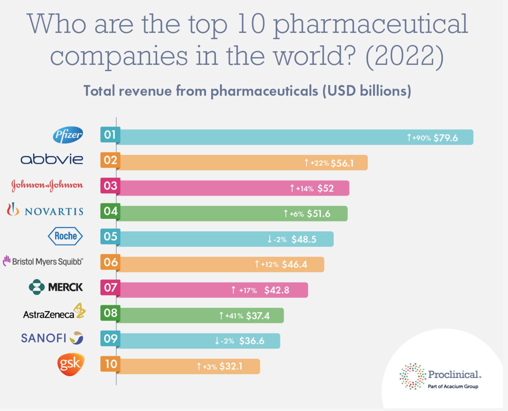

Introduction
Background
According to the New York Times, over 100 million Americans, nearly one-third of the United States’ population, are carrying around medical debt, with a quarter of those people owing more than five-thousand dollars. Although access to health insurance has increased over the last decade through the Affordable Care Act, little has been done to mitigate out-of-pocket expenses that seem to be rising and rising each year, to the point of outpacing inflation.
These out-of-pocket expenses include deductibles, co-pays, and, perhaps most notoriously, sky-high prescription drug costs. Necessary, life-saving medications for both rare diseases and extremely common conditions like high blood pressure and cholesterol have all experienced significant price increases year after year. Even small out-of-pocket drug cost increases have lead to extreme decreases in prescription drug consumption, with even ten-dollar increases leading to a 23 percent decrease in drug consumption and a 33 percent increase in monthly mortality. Even from personal experience, I have personally been unable to afford specialized medications and other treatments due to price gouging and an inequitable marketplace of prescription drugs, forcing me to seek other avenues for treatment.
Meanwhile, as the American public suffers under ever-increasing drug costs for life saving medicine, massive pharmaceutical companies like Pfizer and Eli Lilly are seeing record profits year after year, while increasing prices on frequently prescribed medications by anywhere from 40 to 71 percent during 2011 to 2015 alone, according to the Center for American Progress.
This infographic from Proclinical highlights the top 10 U.S. pharmaceutical companies as of 2022.

Guiding Questions for Analysis
In this project, I will be using time series analysis to study the current state of the pharmaceutical industry. To do this, I will be analyzing how prescription drug costs have changed over the years, and explore the extent to which prices have increased and forecast what future price increases might look like. Additionally, I will be analyzing the rising profits of the pharmaceutical industry by looking at the performance of the IHE U.S. Pharmaceutical ETF over time.
Through my analysis, I hope to answer the following guiding questions:
Have out-of-pocket prescription drug costs increased since 1960?
Can future out-of-pocket prescription drug costs be predicted? Not including inflation, what will the next ten to twenty years look like in terms of increasing costs?
Has the pharmaceutical industry shown increasing profits since the IHE ETF was established in 2007?
Can the future performance of the IHE ETF be predicted? What will the next ten to twenty years look like in terms of market performance?
How volatile is the current state of the IHE ETF? Can its future volatility be forecasted?
Are there certain times of the year in which Americans may experience heightened drug costs?
If there exists some seasonality to increased prescription drug costs, what can this increase be attributed to?
Can a connection be drawn between the increased profitability of the U.S. pharmaceutical industry and rising out-of-pocket prescription drug costs for consumers? If both are proven to be increasing over time, can some kind of causation or dependence be established?